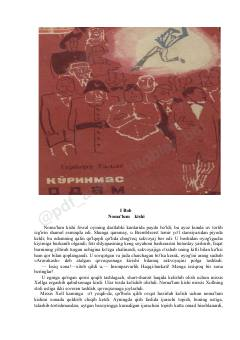

KOYuzi bintlar bilan o'ralgan sirli odamning g'ayritabiiy sarguzashtlari haqidagi ilmiy-fantastik asar.
Bremblxerst qishlog'iga yuzi va boshi bintlar bilan o'ralgan sirli notanish kishi kelib qoladi. Uning g'ayritabiiy ko'rinishi va o'zini tutishi qishloq aholisida katta qiziqish hamda xavotir uyg'otadi. Asar insonning ko'rinmas bo'lib qolishi va buning oqibatlari haqidagi mashhur ilmiy-fantastik hikoyadir.